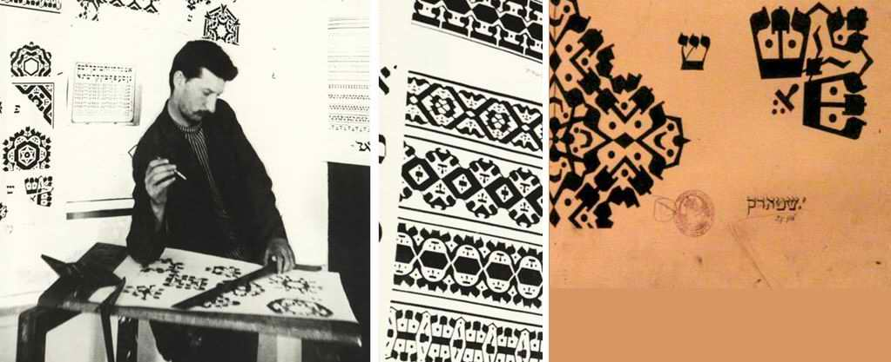
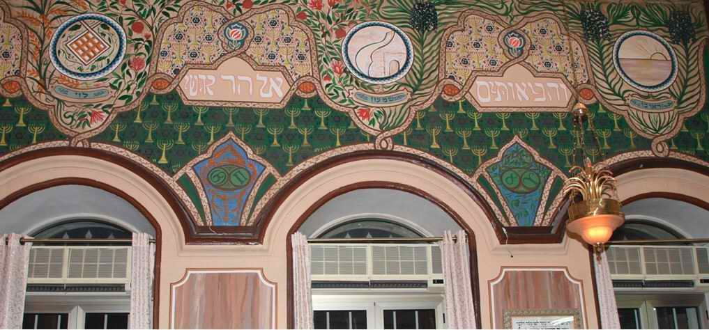
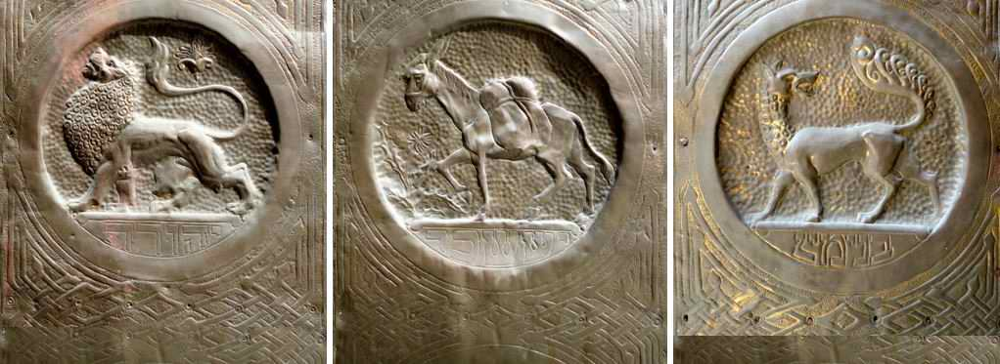
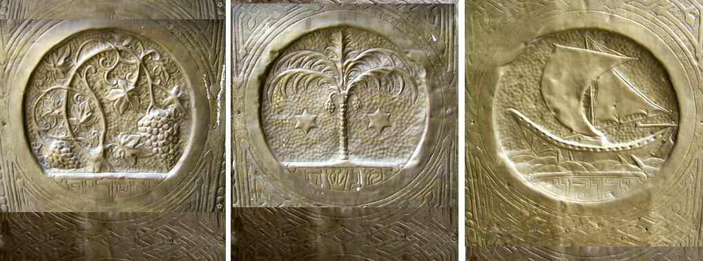

The Beginnings of Zionist Art. Part III
The wall painting of the Ades Synagogue is of special value. Researchers regard it as the beginning of Zionist monumental art, and it is listed in the register of Israel's cultural heritage.
For the beginning of the article, see Part I and Part II.
It must be said that for the Jewish world of that time, practising the visual arts, and sculpture in particular, meant breaking a kind of taboo. This was connected with the second commandment and its traditional interpretation (although the "angle of view" changed from century to century). That is why many of Schatz's attempts to bring Jewish art (including figurative art) into the synagogue met with resistance. Nor did they always meet a warm welcome in Zionist circles. Yet Professor Schatz gave art a very great role in the revival of the Jewish people's sense of identity.

Barukh Schatz, who grew up in a religious family in Lithuania and studied at one of the yeshivas of Vilna, wanted to bring the new Zionist art into the decoration of synagogues.
In the Ashkenazi synagogues, however, he met with no understanding and even with opposition, but he found interest among the leaders of the Syrian community of the Ades Synagogue, which was relatively liberal in matters of art. They agreed to give the walls of the synagogue over to the experiments of Stark, a former student of the Bezalel School.

Yaakov Stark was born in Kraków in 1881. In 1905, at the age of twenty-four, he made aliyah to the Land of Israel. Soon afterwards he became a student in the first intake of the Bezalel School (the "Midrasha le-Omanut Yehudit", founded by Professor Boris Schatz in 1906). Later he became a teacher at the school.
Stark, at that time a young artist and teacher at Bezalel, took on the work on the synagogue's wall paintings with enthusiasm and practically for free, in spite of his poverty.

The paintings of the Ades Synagogue
Today Yaakov Stark's wall painting in the Sephardi Ades Synagogue, which he finished in 1912, is included in the register of Israel's cultural heritage.
Three elements of the artist's work deserve special mention: the depiction of the shivat ha-minim (the seven species, the gifts that the Promised Land brings forth), the emblems of the tribes of Israel, and a large inscription in Hebrew.
The first two elements (1. the shivat ha-minim stand for the Land of Israel, and 2. the emblems of the tribes stand for the whole revived people of Israel) were connected directly with Israel, being gathered by God into Eretz Israel (as promised by many of the prophets). But the large Hebrew inscription concerned all mankind: a prophecy from the book of the prophet Yeshayahu (Isaiah 56:7).
"Even them will I bring to my holy mountain, and make them joyful in my house of prayer: their burnt offerings and their sacrifices shall be accepted upon mine altar; for mine house shall be called an house of prayer for all people."
Isa. 56:7
וַהֲבִיאוֹתִים אֶל־הַר קׇדְשִׁי וְשִׂמַּחְתִּים בְּבֵית תְּפִלָּתִי
עוֹלֹתֵיהֶם וְזִבְחֵיהֶם לְרָצוֹן עַל־מִזְבְּחִי
כִּי בֵיתִי בֵּית־תְּפִלָּה יִקָּרֵא לְכׇל־הָעַמִּים׃
VA-HAVI'OTIM EL-HAR KODSHI VE-SIMAKHTIM BE-VEIT TEFILATI
OLOTEIHEM VE-ZIVKHEIHEM LE-RATSON AL-MIZBEKHI
KI VEITI BEIT-TEFILA YIKARE LE-KHOL-HA-AMIM
Why Stark chose this particular passage of Scripture, universal in character and quite untypical of an orthodox synagogue, we do not know. But by this choice he proclaims from the walls of the synagogue a prophecy of great eschatological importance: Israel must be gathered into Eretz Israel, and Mount Zion must become the centre of worship for all the nations of the world!
The prophetic art of the Bezalel School
It is symbolic that the Ades Synagogue brought together the tradition of the Aleppo Jews, which goes back to deep antiquity, and a fresh wave of visual art.
The question of style was and remains open to discussion. But the merit of the Bezalel School, its founder and its teachers, is that they were the first to take part through their art in the revival and ingathering of Israel in its land.
I will give just one example of a creative revelation that this school shared not only with the Israelis who had returned to the land of their fathers, but also with the sons of Yaakov still scattered all over the world. The revelation I am talking about can, without exaggeration, be compared with the prophetic art of Bezalel, from whom three and a half thousand years separate us.
What we take for granted today had to make its way with great effort in those years. Today it is hard to find a synagogue, in whatever country, that does not use the emblems and symbols of the tribes of Israel in one way or another. Yet it was the Bezalel School that first brought them into use.
Boris Schatz's school first pointed out the direction for creative search: the Torah and the Prophets. The first waves of aliyah, having largely lost their Jewish bearings, now sought to return to the sources to answer the question "who are we, where do we come from, where are we going".
Professor Schatz's most important role was also that he did not merely encourage this search and its creative expression, but made enormous efforts to spread it among many Jewish communities in Europe, America and Russia. He travelled to different continents, organising the first art exhibitions from Eretz Israel. These were works by the students and teachers of the Bezalel School of Jewish Art.
No, the Bezalel School did not invent the symbols of the tribes of Israel itself. It SAW them in the Holy Scriptures and raised them high, so that many could see them.

Big deal, someone will say… They saw the signs of the tribes in the Torah. Some prophecy…
Listen: for the last two thousand years Jews all over the face of the earth have been reading the prophecies of Yaakov our father (Gen. 49) and Moshe Rabbenu (Deut. 33). And they did not see what was seen in the land of the fathers by people who were half-assimilated and half-secular, but thirsty to drink from the fountain of living water. They were looking for the sources. Moshe and Yaakov, shortly before their deaths, each in his own time, prophesied to the 12 tribes of Israel. They prophesied about their calling and their future, if only they would listen to the word of the Lord and fulfil their "na'aseh ve-nishma" (we will do and we will hear).
And so the students and artists of the Bezalel School saw something from the depths of the ages. Did they understand everything they saw? I think not. But they "nailed" it before their eyes on doorposts, on walls, on the doors of synagogues, like tefillin and tsitsit, for a memorial before the Lord.

And I see one more very important thing in their discovery: these twelve symbols, each with its own colour, sign and inscription (always an inscription under the emblem), are all like the hoshen (the breastplate) of the high priest, with the precious stones and the names of the tribes on the high priest's breast. As it is written, the priest must bring the whole people of Israel before the Lord for a memorial before the Most High. And these signs, this breastplate, are the garment of every synagogue (and following them, some Christian communities also hang flags with the emblems of the tribes in their houses of prayer).
"And Aaron shall bear the names of the children of Israel in the breastplate of judgment upon his heart, when he goeth in unto the holy place, for a memorial before the LORD continually."
Exod. 28:29
וְנָשָׂא אַהֲרֹן אֶת־שְׁמוֹת בְּנֵי־יִשְׂרָאֵל בְּחֹשֶׁן
הַמִּשְׁפָּט עַל־לִבּוֹ בְּבֹאוֹ אֶל־הַקֹּדֶשׁ לְזִכָּרֹן לִפְנֵי־יְהוָה תָּמִיד׃
VE-NASA AHARON ET-SHMOT BNEI-YISRAEL BA-HOSHEN
HA-MISHPAT AL-LIBO BE-VO'O EL-HA-KODESH LE-ZIKARON LIFNEI ADONAI TAMID
And this breastplate is a reminder, an intercession before the Lord for the lost tribes, a reminder to Him that He promised to gather all the tribes, every last one. And Jews pray in all the cities and countries where He scattered them, and set this prophetic breastplate as a memorial before the Most High.
Daniel Kruglov: a musical meditation on the Torah portion "Terumah"
Author: Ephraim Kalish / Torah-Art
 Mark Antokolsky. Christ Before the People. Part II
Mark Antokolsky. Christ Before the People. Part II The Beginnings of Zionist Art. The Ades Synagogue
The Beginnings of Zionist Art. The Ades Synagogue Did the Jews Take Egypt with Them in the Exodus?
Did the Jews Take Egypt with Them in the Exodus?